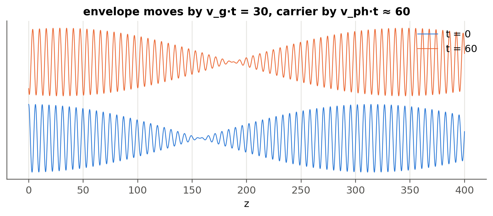

5 Group velocity and group index
 Run this chapter’s code in Google Colab (no installation).
Run this chapter’s code in Google Colab (no installation).
Slides 60–69: wave packets, beat of two waves, group velocity \(v_g=d\omega/dk\), group index \(N_g=n-\lambda\,dn/d\lambda\).
5.1 Key relations
There are no perfectly monochromatic waves (slide 60). Two waves at \(\omega\pm\delta\omega\) with wave vectors \(k\pm\delta k\) add up to (slides 64–65)
\[ E_x=2E_0\cos(\delta\omega\,t-\delta k\,z)\cos(\omega t-kz), \]
a carrier at \(\omega\) modulated by a slow envelope. The envelope, which carries energy and information, travels at the group velocity (slides 61, 66–68):
\[ v_g=\frac{d\omega}{dk}=\frac{c}{N_g},\qquad N_g=n-\lambda\frac{dn}{d\lambda}. \]
In a dispersive medium (\(n\) depends on \(\lambda\)), \(v_g\neq v\). For silica in the near IR, \(N_g\approx1.46\) while \(n\approx1.44\) (slide 69).
5.1.1 Carrier and envelope, live
The red dot rides on a crest of the carrier (phase velocity). The orange dot rides on the maximum of the envelope (group velocity). Change their ratio to see normal (\(v_g<v\)), no (\(v_g=v\)) and anomalous (\(v_g>v\)) dispersion.
5.2 Worked example: group delay in a fiber link
Show the Python
z = np.linspace(0, 400, 4000)
k1, k2, w1, w2 = 1.0, 1.02, 1.0, 1.01 # v_g = Δω/Δk = 0.5, v_ph ≈ 1
fig, ax = plt.subplots(figsize=(9, 3))
for k, t in enumerate((0, 60)):
E = np.cos(w1*t - k1*z) + np.cos(w2*t - k2*z)
ax.plot(z, E + 4.5*k, color=ol.PALETTE[k], lw=0.8, label=f"t = {t}")
ax.set(xlabel="z", yticks=[], title="envelope moves by v_g·t = 30, carrier by v_ph·t ≈ 60")
ax.legend(loc="upper right"); plt.show()
Show the Python
Lf = 1e3
for lam_nm in (1310, 1550):
l = nm(lam_nm)
print(f"{lam_nm} nm, 1 km of silica: phase delay L·n/c = {Lf*ol.n_silica(l)/c0*1e6:.4f} µs, "
f"group delay L·Ng/c = {Lf*ol.group_index_silica(l)/c0*1e6:.4f} µs")
D = 22 # ps/(nm km), bulk silica at 1550 nm (see @sec-index)
dlam_sig = ol.dlam_from_dnu(10e9, nm(1550))*1e9 # 10 Gb/s signal ≈ 10 GHz wide, in nm
print(f"10 Gb/s signal (Δλ ≈ {dlam_sig:.2f} nm) over 80 km: spread ≈ {D*dlam_sig*80:.0f} ps")
print(f"walk-off between channels 0.8 nm apart over 80 km ≈ {D*0.8*80:.0f} ps")1310 nm, 1 km of silica: phase delay L·n/c = 4.8260 µs, group delay L·Ng/c = 4.8755 µs
1550 nm, 1 km of silica: phase delay L·n/c = 4.8167 µs, group delay L·Ng/c = 4.8787 µs
10 Gb/s signal (Δλ ≈ 0.08 nm) over 80 km: spread ≈ 141 ps
walk-off between channels 0.8 nm apart over 80 km ≈ 1408 psA 10 Gb/s bit slot is 100 ps. The dispersive spread over a single 80 km span is already comparable to the bit period, which is why dispersion compensation or coherent DSP is needed (Chapter 2).
TipGoing deeper
- Group velocity can exceed \(c\) near an absorption line (anomalous dispersion). Why does this not violate causality? Look up “front velocity” and Brillouin–Sommerfeld precursors, and see the deep-dive chapter, Chapter 15.
- In a microring or Fabry–Perot resonator the free spectral range is set by \(N_g\), not \(n\): \(\Delta\nu=c/(N_gL_{rt})\). Measure \(N_g\) of a silicon waveguide from a ring spectrum (typically \(N_g\approx4\) versus \(n_\text{eff}\approx2.4\)).
- Slow light: photonic-crystal waveguides reach \(N_g>30\). What limits the usable bandwidth? (Links to Chapter 11.)
- Write the Taylor expansion of \(k(\omega)\) and relate the second-order term \(\beta_2\) to the dispersion coefficient \(D\).
NoteComplements
- G. P. Agrawal, Fiber-Optic Communication Systems: chapter on dispersion in single-mode fibers.
- Saleh & Teich: sections on pulse propagation in dispersive media.
5.3 Try it yourself
- Derive \(N_g=n-\lambda\,dn/d\lambda\) from \(v_g=d\omega/dk\) with \(\omega=2\pi c/\lambda\) and \(k=2\pi n/\lambda\) (slides 66–67).
- Using
ol.n_silica, find the wavelength where \(N_g\) is minimum. Why is that wavelength special? - A GPS-like timing signal travels 100 km in fiber. How much later does it arrive than the same signal in vacuum?